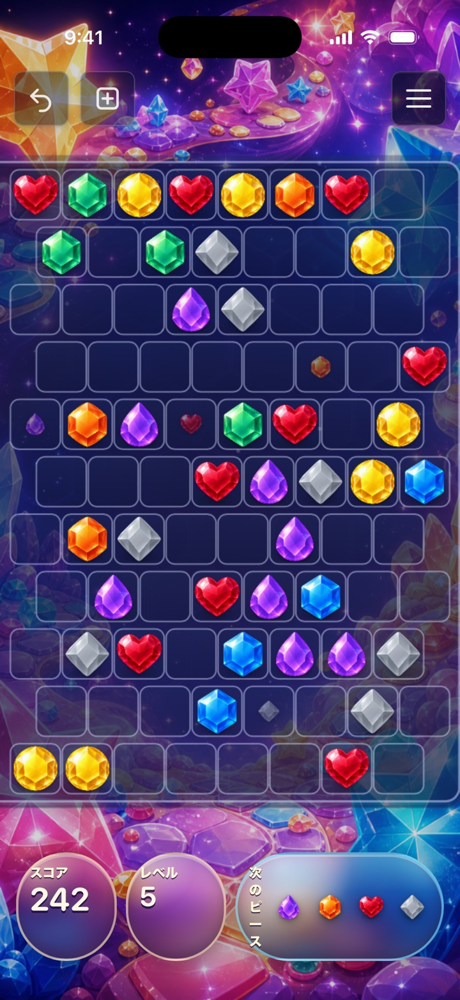

道を見つける
ピースを選び、空きマスを通って到達できるマスを選びます。

01 — 02 — 03
ピースを選び、空きマスを通って到達できるマスを選びます。
同じ色が6個以上隣り合うと消えます。得点できた場合は予告ピースが追加されず、続けて動かせます。
得点できなかった場合は予告ピースが追加されます。予告を見ながら道を確保し、合法な移動がなくなると終了です。
両モードとすべてのボード・ピースの外観を選べます。無料の各局は合法手100回、または動かせなくなった時点で終了します。お試しの進行状況とスコアは保存されず、設定は保持されます。
無料ダウンロード。買い切りで完全版を解放できます。 完全版ではターン数に制限がなく、難易度別のセーブ、最高記録、任意のiCloudバックアップが使えます。